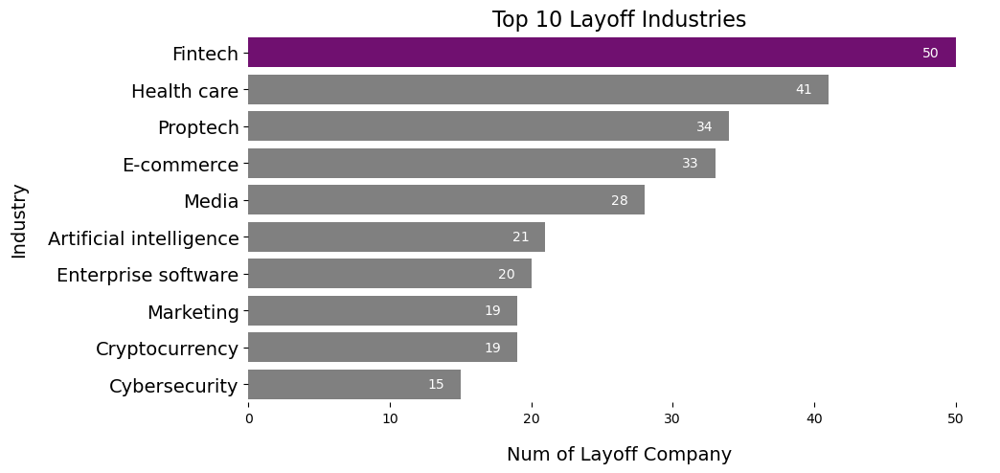

Exploring Technology Company Layoffs
In the dynamic landscape of the technology industry, the phenomenon of layoffs has become an increasingly prevalent and noteworthy aspect. Understanding and closely monitoring this phenomenon is crucial for various people, especially for graduating students who are desperately seeking for a job. Thus, in my project, I am going to analyze the dataset that I found on Kaggle by visualizing certain important facts about those layoff companies by answering the questions:
- -Who they are?
- -What industry they are?
- -Where they are?
- -When they started the layoff?
East and West Coasts Have More Layoffs
This Choropleth Map visually represents the geographic locations of layoff company headquarters. The legends delineate general industry categories and illustrate the range of workforce impact caused by layoffs. By hovering over each data point, tooltips provide detailed information about individual companies.Upon a quick overview, one can observe a higher concentration of layoff companies on the east and west coasts compared to central America. For a more in-depth exploration, users can click on different industries in the legend, revealing specific locations for each industry. This functionality extends to the Impacted Workforce Range, allowing users to discern patterns in layoff distribution across states. Notably, as the impacted workforce increases, there is a noticeable trend of more layoff companies being situated on the west coast.
In summary, this interactive map offers a comprehensive view of layoff data, empowering users to analyze geographic, industry, and workforce impact patterns with ease.

Aspect Comparisons
This section will systematically examine layoff data in correlation with various factors, including company specifics, industry classification, headquarters location, and the IPO (Initial Public Offering) status of the entities involved. This comprehensive approach aims to provide a nuanced understanding of the layoff phenomenon within the technology sector. It also facilitates a more informed analysis of the factors influencing layoff trends, enabling individuals to formulate strategies to navigate the evolving tech job market.
- Amazon holds the distinction of having the highest total number of laid-off employees, reaching a significant figure of 18,000 individuals.

- Opting for a more granular approach, I've chosen to utilize detailed industry categories for a nuanced comprehension of the data points. Notably, Fintech emerges at the forefront, holding the top rank with 50 firms undergoing layoffs in this particular industry.

- The Choropleth Map provided earlier offers insights into potential areas with higher layoff occurrences. Complementing this, the accompanying bar chart underscores that San Francisco stands out with the highest count of layoff companies, totaling 136 firms.

- The data reveals that private companies, totaling 370 firms, surpass public companies in terms of layoffs. This indicates a notable trend where the private sector experiences a higher incidence of layoffs compared to their public counterparts.
January 2023 Has the Most Layoffs
The static line chart and interactive tree map synergize to illustrate the evolving layoff trends within technology companies.
The 'Reported Date' legend on the right enhances user interaction,
allowing switching between monthly tree maps to unveil the specific companies and industries affected during each period.
In the tree map, distinct colors signify different industries, while the size of each block provides a visual gauge of the percentage impact from layoffs.
Hovering over individual blocks reveals nuanced details about each company's layoff scenario.
The line chart portrays a temporal narrative, indicating that the initial layoffs commenced in January 2022,
with the total layoffs exhibiting fluctuations throughout 2022 before peaking in January 2023.
The corresponding tree map visually corroborates this narrative by illustrating the initiation of layoffs within the service industry,
followed by subsequent impacts across diverse industries at varying intensities one year later.
This dynamic presentation offers a comprehensive overview of the temporal and sectoral aspects of technology company layoffs.

About Author
Hello! I'm Fangzhi Li, a junior majoring in Data Science and Applied Math at William & Mary.
This website serves as the final project for the DATA 303 - Data Visualization course.
The Choropleth Map and Tree Map were created using Tableau,
and the bar charts were generated using Seaborn (you can find the code HERE).
Upon receiving the data, my initial step involved comprehensive dataset cleaning.
I removed columns deemed irrelevant for data analysis.
Subsequently, I grouped industry fields to eliminate potential overlaps arising from different naming conventions.
The original dataset comprised 289 distinct industries, but after the cleaning process, this number was reduced to 89.
I then introduced an 'industryByStockMarket' column, categorizing industries in a more generalized manner with reference to the stock market,
resulting in eight overarching industries.
Following this, I refined the 'headquarter_location' column to exclusively include city names, omitting state names.
To facilitate mapping in Tableau, I utilized Geocode add-ons to encode the latitude and longitude of each headquarters city.
This step allowed Tableau to accurately position each data point on the map.
For a detailed breakdown of the data cleansing process, you can refer to the code HERE.